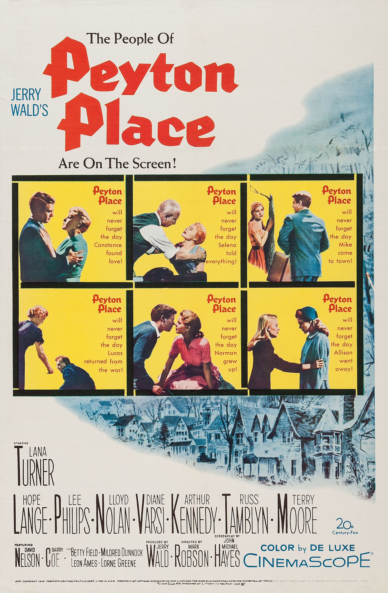

Peyton Place
30th Academy Awards
(Oscars 1958)
9 Nominations, 0 Awards
| Nominations | ||
|---|---|---|
| Category | Nominees | Result |
| Best Motion Picture | Jerry Wald | Nominated |
| Actress | Lana Turner | Nominated |
| Actor in a Supporting Role | Arthur Kennedy | Nominated |
| Actor in a Supporting Role | Russ Tamblyn | Nominated |
| Actress in a Supporting Role | Diane Varsi | Nominated |
| Actress in a Supporting Role | Hope Lange | Nominated |
| Directing | Mark Robson | Nominated |
| Writing (Screenplay--based on material from another medium) | John Michael Hayes | Nominated |
| Cinematography | William Mellor | Nominated |